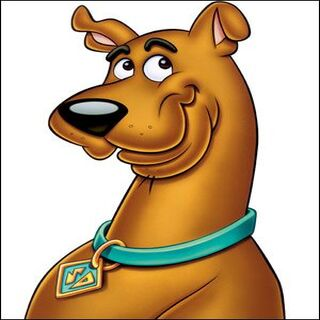
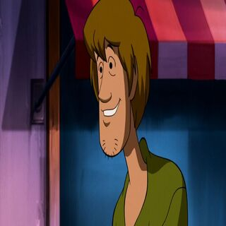
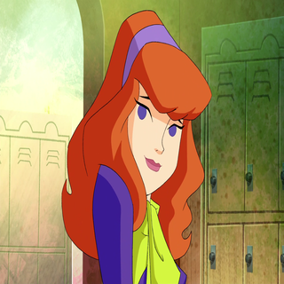
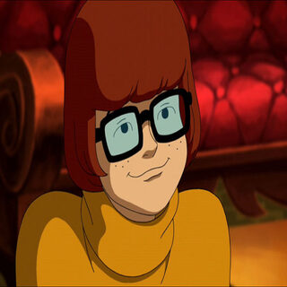
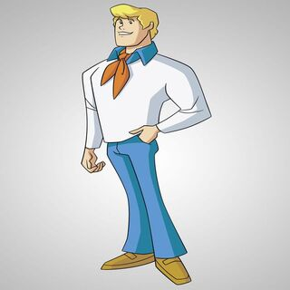
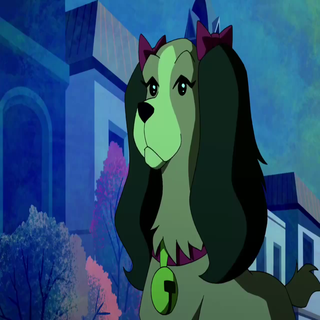
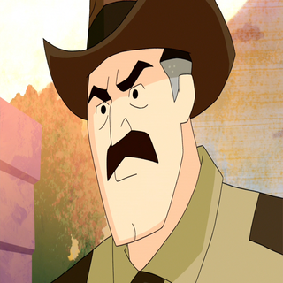
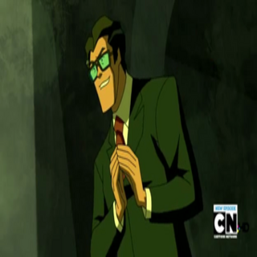

Personagens
Ao decorrer dos episodios fomos apresentados a diversos personagens com caricteristicas e estilos diferentes e até mesmo os personagens principais tem pecularidades das demais franquias, aqui nessa aba vai ser relembrado todos, menos monstros/vilões, que ja passaram na seríe.
Scooby-Doo
Nessa série o cachorro da turma disputa a atenção do seu melhor amigo com a Velma durante parte da primeira temporada e durante a segunda ele se apaixona por nova, pela primeira vez e mostrado o cachorro como aluno de uma universidade além de ser responsável pela solução para acabar com a maldição de Baia Crista... No demais e velho Scooby de sempre sendo comilão, brincalhão e medroso.
Salsicha
Vive um romance durante a primeira temporada com Velma o que causa brigas e disputa de atenção entre sua namorada e seu cachorro, na série também e possível ver as raras vezes em que ele aparece com alguma roupa diferente da que ele usa geralmente, durante a segunda temporada pode se ver uma evolução mas nada estravagante... No demais, bem, é o Salsicha.
Daphine
Por estar extremamente apaixonada por Fred, ela tenta chamar a atenção dela de diversas formas possíveis desde tentar aprender sobre seus gostos até o ponto de causar ciumes; no começo da segunda temporada ela se afasta da turma, após os acontecimentos do últimao capitulo da primeira temporada, e vive um romance com um herdeiro de uma fabrica de escadas e que mas tarde se revela um monstro que puxa a beleza dos personagens
Velma
Apaixonada por Salsicha, disputa a atenção de seu namorando com Scooby e fica chateada após não escolhida por ele; ela também é uma das principais responsaveis pela re-união da turma na segunda temporada... Do resto e Velma, inteligente, espertae que adora enigmas.
Fred
Obcessacado por armadilha e apaixonado por vans, o motorista da maquina misterio vive um amor secreto por Daphine porém tem vergonha de assumir; durante a primeira temporada ele acredita ser filho do prefeito Jones, porém com o decorrer da série se descobre que na verdade ele é filho de Brad e Judy, por quem também e traido devido ao tesouro amaldiçoado.
Anjinha Dinamite

Integrante da misterio SA antiga, ela trabalha na rádio da cidade, também contra ao tesouro maldito, ela era considerada como coselheira e amiga da turma ajudava com os enigmas que eram passados pelo senhor E, passou por uma mudança radical após a decoberta pela turma de que ela fazia parte do grupo antigo e foi uma das únicas pessoas que "morreu" na série, no caso para salvar a turma.
Senhor E

Integrante da misterio SA antiga, dono da maior empresa de baia cristal, a detroido, ele ajuda a direcionar, por meio de enigmas e charadas, a turma do Scooby para misterios que tem relação com o disco planisferico, porém ele não gosta do tesouro por saber da maldição que rodeio o mesmo, mas é obrigado pelo seu ex mascote, pericles, a ajuda-lo procurar o tesouro.
Brad Chiles & Judy Reeves

Integrantes da misterio SA antiga, se revelam pais verdadeiros do Fred após o prefeito Jones ser desmascarado no último episodio da primeira temporada, aprendem sobre armadilhas por causa da obcessão pelo tesouro que existe abaixo da cidade e pelo mesmo motivo tentam enganar o seu filho para conseguir os pedaços do disco planisferico que esta em poder da turma do Scooby-Doo.
Maria "Cachorro Quente"

Recebe o apelido de Cachorro quente devido ao cheiro que ela exala; se torna melhor amiga de Velma após ela ajudar a garota a se reastebelecer na sociedade e por isso substitui a Daphine durante a sua ausencia na segunda temporanda, ela também e responsavel por dar vida a Dark Lillith para conseguir pedaços do disco planisferico a qual da para Velma como forma de um pedido de desculpas; ela é um dos personagens que morre no final da série.
Nova
Namorada de Scooby-Doo, apareceu pela primeira vez como mascote de Judy e Brad, que após sofrer um acidente com um helicoptero fica internada e começa a ajudar, por meio de sonhos, o Scooby-Doo a desvendar o misterio principal e de como derrota a maldição que envolve a cidade de baia cristal, ela também e uma das primeiras responasaveis a citar e explicar do que se tratava o "NIBIRU".
Bronson Stones (Xerife)
Xérife da cidade que vive pegando nos pés dos personagens principais; pau mandado do Prefeito Jones faz tudo que ele manda e consecutivamente odeia quando as crianças pegam e desmacaram os monstros; teve um episodio em que o tema central era ele ser desafiado por um xerife fantasma.
Sr Jones (Prefeito 1ª Temporada)
Prefeito durante a primeira temporada, ele se dizia pai do Fred, chegou na cidade já sabendo do tesouro e por lá conheceu a mistério sa antiga e para assuta-los inventou o personagem denominado de "feio", e com personagem ele é desmascarado anos depois pela a turma do Scooby-Doo e Fred finalmente descobre toda a història da vida dele.
Janet Netlles (Prefeita 2ª Temporada)

Por indicação de um "desconhocido", a prefeita com a ajuda de scooby-doo, reune a turma novamente, pois com a separação da misterio SA, os monstros tomaram conta da cidade e com isso perdeu-se o controle da mesma.
Skipper Shelton
Apareceu poucas vezes, dono da cabana da ostra, reconhecido por usar um tapa nariz, devido ter perdido por causa de um tubarão enquanto pescava
Senhor & Senhora Rogers

Apareceram pouquissimas vezes na série, geralmente para dar alguma direção para Salsicha e Scooby, como nas vezes que foram mandados, respecttivamnte, para o quartel e fazenda como forma de castigo.
Barty & Nan Blake

Os pais de Daphine, desejam muito que a filha se case com um "bom partdo" para que uma das filhas possam dar certo; Barty teve um episodio de que era suspeita em ser uma vampira, tendo como pressuposto a eterna juventude, porém, no final do capítulo e revaelado que, na verdade, a amiga dela e a verdadeira vampira e que ela estava fazendo aulas particulares.
Angie & Dale Dinkley

Donos de uma agencia de turismo assustador e resposaveis pelo o museu da cidade durante a primeira temporada, gostavam quando os monstros atacavam a cidade para gerar clientes, já na segunda temporada o Dale desaparece sem explicações e Angie trabalha em uma livraria/loja de antiguidades... Tiveram raras aparições.